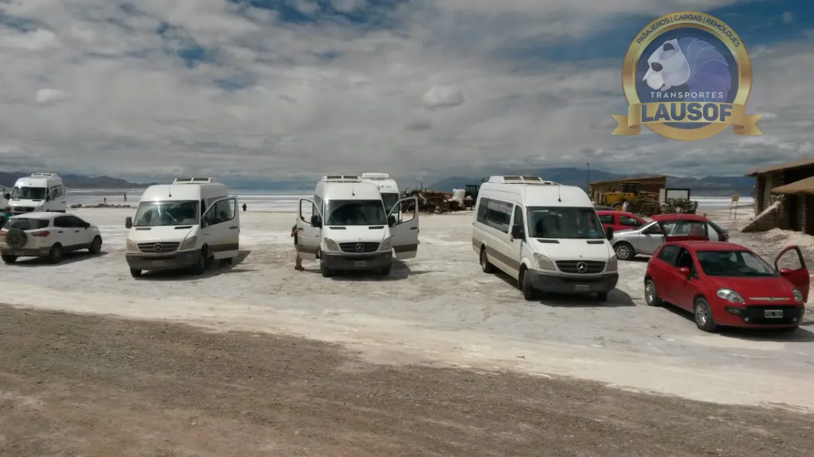
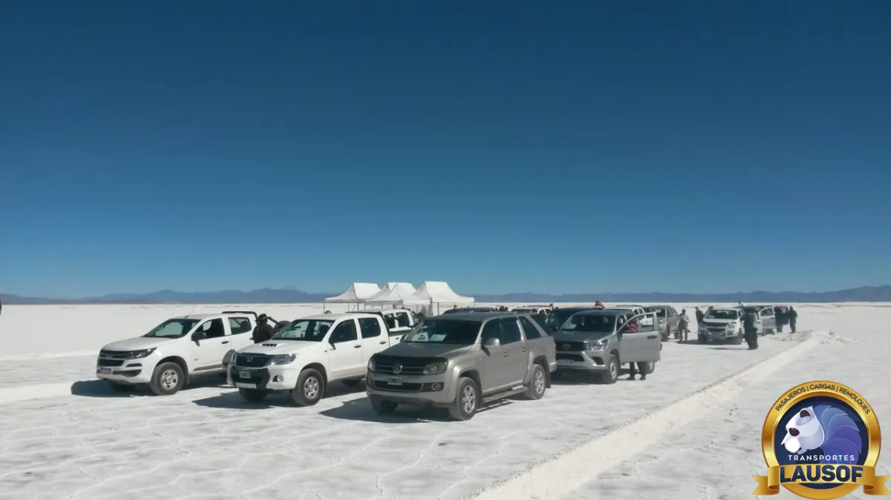

Salinas Grandes, Jujuy
Salinas Grandes desde Salta, por Purmamarca y la Cuesta de Lipán.
Una combi privada con chofer profesional, desde su hotel en Salta o desde el aeropuerto hasta las Salinas Grandes. Vamos por Jujuy: Purmamarca y después la RN 52 por la Cuesta de Lipán. Ida y vuelta en el día o con una noche en Purmamarca, para familias, grupos y agencias de turismo.
La ruta
Rutas, distancias y tiempos desde Salta
Las Salinas Grandes son un salar de unos 212 km² compartido por Jujuy y Salta, a una altura promedio de 3.450 m. Desde Purmamarca, la RN 52 sube la Cuesta de Lipán hasta unos 4.170 m y baja al salar.
| Tramo | Ruta, distancia y tiempo aproximados, altura |
|---|---|
| Salta capital a Purmamarca | Unos 188 km y 2 h 50 min por la autopista con peaje hasta San Salvador de Jujuy (RN 9, RN 34 y RN 66) y luego la RN 9 hacia el norte hasta Purmamarca, a 2.324 m. |
| Purmamarca a Salinas Grandes | Unos 66 km y 1 h 25 min hacia el oeste por la RN 52, que es asfaltada. El punto más alto es el abra en lo alto de la Cuesta de Lipán, a unos 4.170 m. |
| Salta capital a Salinas Grandes | Unos 255 km y 4 h 10 min solo ida: ida y vuelta son unos 510 km y más de ocho horas de manejo, sin contar las paradas. |
| Aeropuerto de Salta a Salinas Grandes | Unos 258 km y 4 h 20 min solo ida: el aeropuerto queda a unos 11 km del centro. |
Distancias y tiempos: estimaciones de Google Maps consultadas el 10 de octubre de 2026, sin paradas. Los 66 km desde Purmamarca, los 4.170 m de la cuesta, los 3.450 m de altura y los 212 km² son los que publica la Secretaría de Turismo de la Nación.



Altura
De 1.200 m a 4.170 m en una mañana
Es la excursión clásica más alta de las que salen de Salta. La ciudad está a unos 1.200 m, Purmamarca a 2.324 m, el abra de la Cuesta de Lipán a unos 4.170 m y el salar a unos 3.450 m. La mayor parte de la subida se hace en la hora siguiente a Purmamarca.
- Los Centros para el Control y la Prevención de Enfermedades de Estados Unidos (CDC) señalan que por encima de unos 2.440 m pueden aparecer síntomas de mal de altura. Subir en el día y dormir más abajo es una de las pautas que recomiendan, y es lo que hace una excursión desde Salta o desde Purmamarca.
- Los síntomas habituales son dolor de cabeza, cansancio, falta de apetito y náuseas. Si empeoran, lo indicado es bajar: en esta ruta, volver hacia Purmamarca.
- Los CDC también aconsejan no tomar alcohol ni hacer ejercicio intenso durante las primeras 48 horas en altura.
- Las personas con enfermedades cardíacas o respiratorias, y las embarazadas, deberían consultar a su médico antes del viaje.
Subimos la cuesta sin apuro y paramos cuando el grupo lo necesita. Si alguien se siente mal, volvemos.
Cómo armar el viaje
Un día largo, o una noche en Purmamarca
Ida y vuelta en el día desde Salta. Salta, Purmamarca, las Salinas y el regreso son un día completo: más de ocho horas de manejo antes de las paradas. Conviene salir temprano.
Con una noche en Purmamarca. Repartir el viaje deja tiempo para el pueblo y para el salar sin correr. La Secretaría de Turismo de la Nación sugiere quedarse en el salar hasta el final del día para ver el atardecer, algo que solo tiene sentido si el grupo duerme en Purmamarca y no en Salta.
Junto con la Quebrada. Purmamarca es también la puerta de Tilcara y Humahuaca: en Salta a Purmamarca, Tilcara y Humahuaca están los datos para armar un viaje de dos o tres días.
Qué llevar. La Secretaría de Turismo recomienda ropa de abrigo, anteojos de sol y gorro: el clima es árido, con mucha diferencia de temperatura entre el día y la noche, y la sal refleja el sol. De diciembre a marzo es temporada de lluvias.
La unidad
Qué incluye y qué no
- Una combi privada de 19+1 plazas para el grupo, con chofer profesional: un grupo de 4 a 10 personas viaja con lugar de sobra, y los grupos más grandes viajan en combis adicionales
- O una camioneta 4x4, según el grupo; unidades preparadas para la altura
- Búsqueda en el hotel en Salta o en el aeropuerto
- Aire acondicionado en todas las unidades, que se revisan antes de cada salida
- Paradas a elección del grupo: Purmamarca, los miradores de la Cuesta de Lipán y el salar
- Factura A para empresas y agencias
- No es una excursión guiada: el chofer conoce el camino, pero no es guía de turismo
- Atención en inglés por correo y WhatsApp para pasajeros extranjeros
El espacio para equipaje en una combi es limitado: las normas de la CNRT no permiten valijas grandes ni bultos que obstruyan el pasillo. Si el viaje es también un traslado con equipaje, indíquenos cuántas valijas lleva el grupo.
Cómo reservar
Qué datos necesitamos para cotizar
- La fecha, y si es ida y vuelta en el día desde Salta o con una noche en Purmamarca.
- Dónde empieza y dónde termina: el hotel, o el número de vuelo y la hora de llegada al aeropuerto de Salta.
- Cuántas personas viajan y, si hay equipaje a bordo, cuántas valijas.
- Cualquier dato sobre la altura o la salud que debamos tener en cuenta.
- Un nombre y un contacto para la reserva.
Cotizamos la combi completa para el recorrido, no por asiento. No publicamos precios: cada viaje depende de la ruta, las fechas y la unidad que necesita.
Preguntas frecuentes
Lo que suelen preguntar sobre las Salinas Grandes
¿Se puede ir a las Salinas Grandes y volver en el día desde Salta?
Sí, en un día largo: unos 510 km ida y vuelta y más de ocho horas de manejo sin contar las paradas, según Google Maps. Saliendo temprano queda tiempo para Purmamarca y para el salar.
¿Por dónde van?
Por Jujuy: la autopista hasta San Salvador de Jujuy, la RN 9 hacia el norte hasta Purmamarca y la RN 52 por la Cuesta de Lipán hasta el salar. Es asfalto todo el camino.
¿Se puede ir por San Antonio de los Cobres?
Sí, a pedido. Al salar también se llega del lado salteño, por San Antonio de los Cobres, un pueblo de la Puna a unos 3.775 m. Es un día más alto y más largo; esta página describe la ruta por Purmamarca. Indíquenos cuál prefieren al escribirnos.
¿Qué tan alto se llega, y es un problema?
La cuesta llega a unos 4.170 m y el salar está a unos 3.450 m. Casi todos sienten la altura; el dolor de cabeza y el cansancio son frecuentes. Subir en el día y dormir más abajo es lo que recomiendan los CDC. Quien tenga una enfermedad cardíaca o respiratoria, o esté embarazada, debería consultar antes a su médico.
¿Pueden buscarnos en el aeropuerto y pasar por el salar camino a Purmamarca?
Se puede, pero significa pasar del avión a más de 4.000 m en pocas horas. Muchos viajeros prefieren una primera noche en Purmamarca (2.324 m) y el salar a la mañana siguiente. Con el vuelo a la vista lo organizamos juntos.
¿Publican los precios?
No. El precio es por la unidad completa y depende de la ruta, las fechas, la cantidad de pasajeros y la unidad que hace falta. Con esos datos les enviamos la cotización.
Más recorridos
Todos los circuitos de turismo · Salta a Purmamarca, Tilcara y Humahuaca · Alquiler de camionetas 4x4 · Combi al Carnaval de la Quebrada · Salta a San Pedro de Atacama por Jama · Salta a San Antonio de los Cobres
Lausof SRL es una empresa familiar de transporte con base en Salta. Hacemos transporte de pasajeros desde 2010, con habilitación CNRT N.º 60284. Conozca la empresa.
Actualizado el 10 de octubre de 2026.
¿Organizamos la salida a las Salinas?
Envíenos la fecha, dónde empieza y termina el viaje, cuántas personas viajan y un nombre de contacto. Le respondemos con la cotización normalmente en el mismo día hábil.
Por correo: contacto@lausof.com, o por WhatsApp al 387 526-9009.
Consultar por WhatsApp